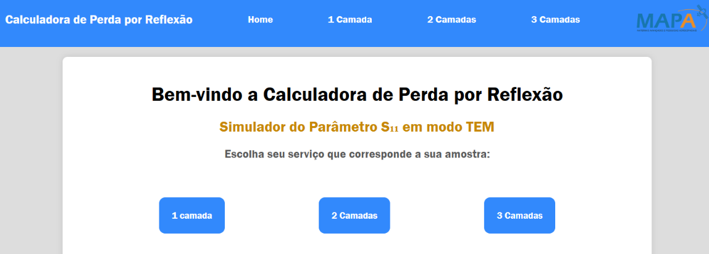

BankUp
O projeto que faço parte, como desenvolvedor Back-End, e Scrum Master da minha equipe, que visa pagamento automático de contas. Com o objetivo de criar uma aplicação... Saiba mais
O projeto que faço parte, como desenvolvedor Back-End, e Scrum Master da minha equipe, que visa pagamento automático de contas. Com o objetivo de criar uma aplicação... Saiba mais

ABC - Otimização de Espessura é uma aplicação web interativa, em pesquisa com INPE, desenvolvida com Python (Flask) para otimizar... Saiba mais

Este projeto é uma API para o gerenciamento de cadastros, listando usuários e com funcionalidades de criação, leitura, atualização e exclusão (CRUD)... Saiba mais

A Atom foi um projeto acadêmico desenvolvido por mim e minha equipe durante a graduação. É uma plataforma que te permite publicar projetos... Saiba mais